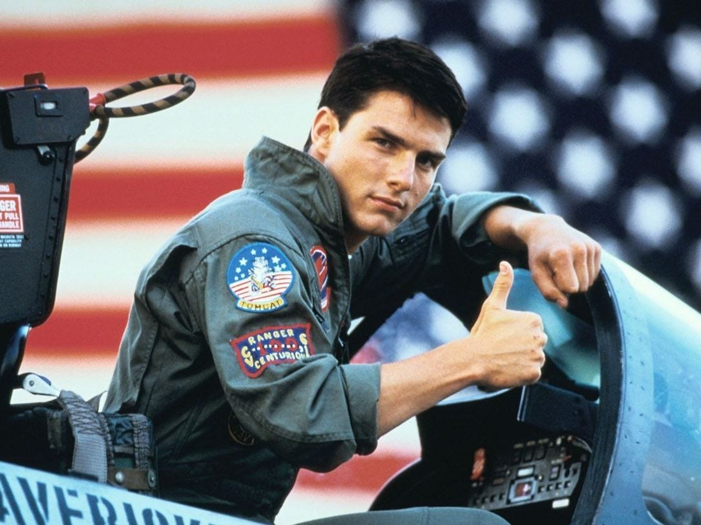

Movies, & Facts Tom Cruise, byname of Thomas Cruise Mapother IV, (born July 3, 1962, Syracuse, New York, U.S.), American actor who emerged in the 1980s as one of Hollywood’s most popular leading men, known for his clean-cut good looks and versatility.